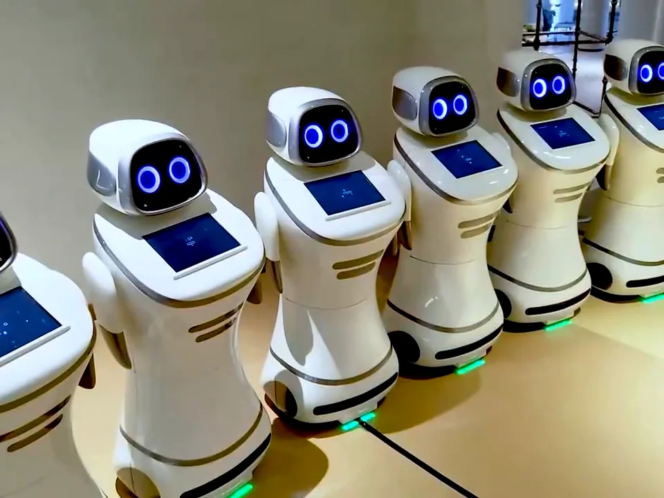
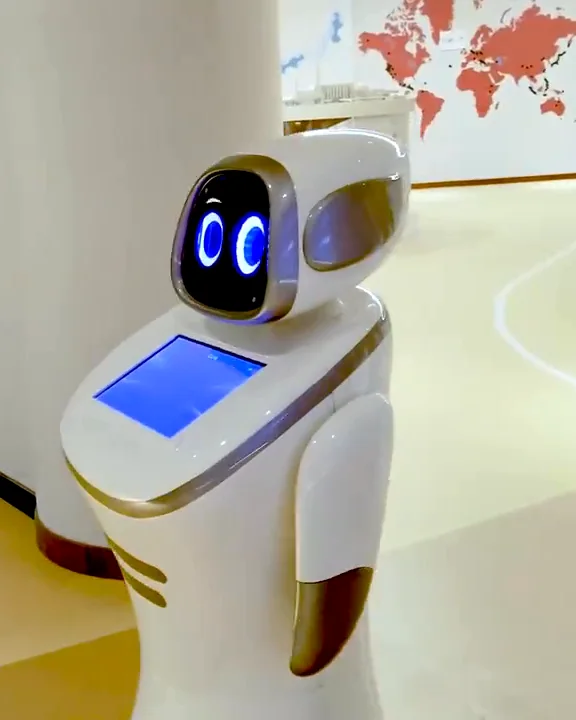
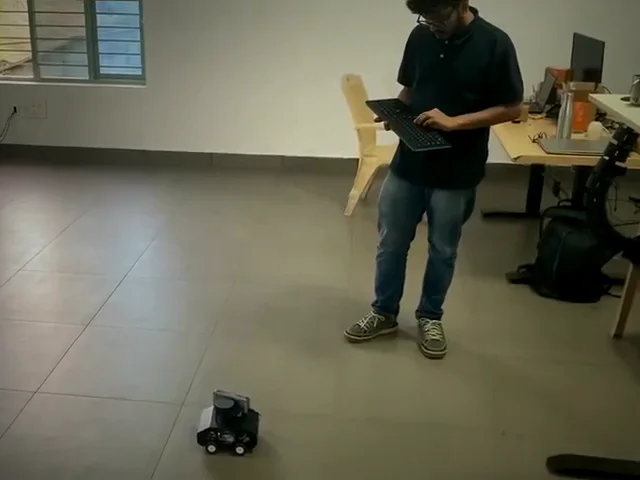

Curio — Museum Guidance Robot
Guidance robot for the Kolkata Museum that navigates the exhibit halls and answers visitor questions about science and technology exhibits.
ROS 2Nav2SLAMJetson Nano
Robotics Engineer
I design, integrate, and develop robotic systems by bringing together embedded electronics, control systems, ROS 2, perception, simulation, and autonomous navigation.

Full-time roles at Vama Communications and Kion Group
From museum robots to embedded drivers
Robotics Engineering · CGPA 9.0
Autonomy · Embedded · Simulation · Hardware
Selected work
A selection of robots and subsystems I have designed, integrated, and tested.

Guidance robot for the Kolkata Museum that navigates the exhibit halls and answers visitor questions about science and technology exhibits.
ROS 2Nav2SLAMJetson Nano

Visual SLAM, 3D mapping, autonomous docking, an RS-485 motor driver, and micro-ROS firmware on FreeRTOS, integrated on a ROS 2 mobile robot.
ROS 2Nav2ORB-SLAM3RTAB-Map

AMR prototype with a Raspberry Pi 4 for ROS and an Arduino Mega for low-level control, mapping obstacles with an RPLiDAR A1M8 and planning paths with A* search.
ROSRPLiDAR A1M8A* searchRaspberry Pi 4

Custom ROS 2 drivers for a Qwiic ICM-20948 IMU and a VL53L0X time-of-flight sensor, with a sensor-fusion algorithm for localization and obstacle detection.
ROS 2ICM-20948 IMUVL53L0X ToFI²C
Approach
A robot only works when hardware, embedded control, perception, decision-making, and physical execution work together. I approach every system as one connected loop.
Choosing and integrating the sensors a robot depends on, and getting clean, timed data out of them.
LiDAR, IMU, time-of-flight, wheel encoders, power sensing
Turning raw measurements into an understanding of where the robot is and what surrounds it.
ORB-SLAM3, RTAB-Map, localization, sensor fusion
Planning paths and behaviours that are safe, efficient, and appropriate for the environment.
Nav2, A* search, docking with NavigateToPose
Executing decisions through deterministic embedded control and reliable motor communication.
micro-ROS, FreeRTOS, RS-485 motor drivers, custom PCBs
Experience
Robotics roles across R&D, warehouse automation, and industrial systems.
Sept 2025 — Present
Kion Group · Pune, Maharashtra
Sept 2023 — Sept 2025
Vama Communications Pvt. Ltd. · Ahmedabad, Gujarat
Apr 2023 — Jul 2023
Fenwick and Ravi (F.A.R.) · Bangalore, Karnataka
Sept 2020 — Mar 2021
Raicam Automotive Private Limited · Sanand, Ahmedabad
Engineering Lab
Experiments and work in progress — separate from completed projects.
Jun 2025
ExploringEvaluating Isaac Sim for robot simulation: URDF import, the ROS 2 bridge, and simulated sensors as a complement to Gazebo.
Feb 2025
ExploringROS 2 Humble robot that navigates a simulated restaurant, picks up orders from the kitchen, and delivers them to tables using Nav2, AMCL localization, and pre-mapped locations in Gazebo.
2025
ExploringBringing microcontrollers into the ROS 2 graph with micro-ROS, building on the encoder, power-sensing, and stepper firmware from the ROS 2 robot development work.
Notes
Practical notes on ROS 2, navigation, SLAM, simulation, and embedded robotics.
Deploy micro-ROS on STM32 and ESP32 to publish sensor data and subscribe to control commands directly within the ROS 2 ecosystem.
The math and algorithms behind Simultaneous Localization and Mapping, and how to run ORB-SLAM3 and RTAB-Map with Nav2.
Set up Isaac Sim, import a URDF, and stream sensor data to ROS 2 for sensor development and policy training.
Contact
Let’s connect and build something meaningful.